strange music page
progressive rcok * * * king crimson
#プログレとは、このバンドの事です。
最近はダメだが。
|
- King Crimson (1969-1973)
- King Crimson (1981-1983)
- King Crimson (1994-)
- King Crimson (live bootleg)
- Robert Fripp
- Peter Sinfield
|
#プログレ基本中の基本、こーいう音楽にはまるとだんだん普通の趣味に戻ってこれなくなります。
ちなみにうちの親がこれ持っていて、子どもの頃に良く聞いていたみたいです。刷り込みか遺伝か知らないですけど、すっかりプログレ好きな人になってしまいました。

- 21st Century Schizoidman (21世紀の精神異常者)
- I Talk to the Wind (風に語りて)
- Epitaph (墓碑銘)
including March for No Reason and Tomorrow and Tomorrow
- Moonchild
including The Dream and The Illusion
- The Court of Crimson King (クリムゾンキングの宮殿)
including The Return of The Fire Witch and The Dance of The Puppets
- Robert Fripp (guitars)
- Ian McDonnald (reeds,woodwind,vibes,keyboards,mellotron,vocals)
- Greg Lake (bass,vocals)
- Michael Giles (drums,percussions,vocals)
- Peter Sinfield (words,illumination)
#2枚目ー、ですけど基本線は1枚目と一緒かな。というか1枚目のよくできた模造品みたいな感じです。クオリティは高いですけどね、Cadence and Cascadeとかすごい綺麗な曲ですし。ただ、前作を意識して作られたのは間違い無いみたいです。1枚目の完成度があまりに高かったのでどーしようか迷ってるような雰囲気も感じます。
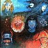
- Peace -A Beginning
- Pictures of A City including 42nd at Treadmill
- Cadence and Cascade
- In The Wake of Poseidon including Libra's Theme
- Peace -A Theme
- Cat Food
- The Devil's Triangle
- Merday Morn
- Hand of Sceiron
- Garden of Worm
- Peace -An End
- Robert Fripp (guitars,mellotron)
- Greg Lake (vocals)
- Michael Giles (drums)
- Peter Giles (bass)
- Keith Tippet (piano)
- Mel Collins (saxes,flute)
- Gordon Haskell (vocals on 3.)
- Peter Sinfield (words)
#多数のゲストが参加していますが、いまいち散漫な印象を受けます。Gordon Haskellのボーカルも違和感を感じますし。過渡期ということを考えても、どうもこのアルバムだけは好きになれないです。
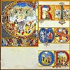
- Circus including Entry of The Chameleon
- Indoor Games
- Happy Family
- Lady of The Dancing Water
- Lizard
- Prince Rupert Awakes
- Bolero - The Peacock's Tale
- The Battle of Glass Tears including
- Dawn Song
- Last Skirmish
- Prince Rupert's Lament
- Big Top
- Robert Fripp (guitars,mellotron,keyboards)
- Mel Collins (saxes,flute)
- Gordon Haskell (vocals,bass)
- Andy McCulloch (drums)
- Peter Sinfield (words,pictures)
- Robin Miller (oboe,cor anglais)
- Mark Charig (cornet)
- Nick Evans (trombone)
- Keith Tippett (piano,electric piano)
- Jon Anderson (vocals on 5.)
PONY CANYON: PCCY-663 (original released 1970.12)
#1971年発表の4枚目。タイトル曲は前期King Crimsonの静かな面を良く現した深みのある名曲だと思います、というかこの1曲だけでもこのアルバムは良いです。個人的には一番好きなアルバムです。後期のアルバムと比べるとPete Sinfieldの存在の意味が良く分かると思います。またゲスト参加のKeith Tippettも凄い良いです。このころのメンバーでのライヴがEarthboundに収録されている訳ですが、同じメンバーとは思えないようなラフな演奏です。逆にこっちのスタジオアルバムの方が特異だったのかも知れないです。バンドの事情はともかくこのアルバムはオススメです、聴きましょう。
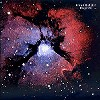
- Formentera Lady
- Sailor's Tale
- The Letters
- Ladies of the Road
- Prelude: Song of the Gulls (序曲：かもめの歌)
- Islands
- Robert Fripp (guitars,mellotron,harmonium)
- Mel Collins (flute,saxes,vocals)
- Boz Burrell (bass,vocals)
- Ian Wallace (drums,percussions)
- Pete Sinfield (words,visions)
- Keith Tippett (piano)
- Paulina Lucas (soprano sax)
- Robin Miller (oboe)
- Mark Charig (cornet)
- Harry Miller (string bass)
PONY CANYON: PCCY-664 (1971.12)
#73年の6枚目のアルバムになります。1曲目はCrimsonの最もコアな部分と思います、演奏はインプロビゼーションの要素の非常に多いものになっています。
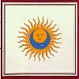
- Larks' Tongues in Aspic, Part One (太陽と戦慄 Part I)
- Book of Saturday
- Exiles (放浪者)
- Easy Money
- The Talking Drum
- Larks' Tongues in Aspic, Part Two (太陽と戦慄 Part II)
- Robert Fripp (guitars,mellotron)
- David Cross (violin,viola,mellotron)
- John Wetton (bass,vocals)
- Bill Bruford (drums)
- Jamie Muir (percussions)
PONY CANYON: PCCY-665 (1973.3)
#インプロビゼーション半分、作曲半分みたいなアルバム。前作でかなりの影響力を持っていたJ.Muirは脱退しています。ただその分このアルバムではB.Brufordが頑張っています。Fractureの緊張感とかたまらないものがあるかもしれないです。ブレーキ切れた自転車で坂道を降りて行くような緊張感/快感。
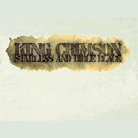
- The Great Deceiver (偉大なる詐欺師)
- Lament
- We'll Let You Know
- The Night Watch
- Trio
- The Mincer
- Starless and Bible Black (暗黒の世界)
- Fracture (突破口)
- Robert Fripp (guitars,mellotron)
- David Cross (violin,viola,keyboards)
- Bill Bruford (percussives)
- John Wetton (bass,vocals)
PONY CANYON: PCCY-666 (1974.3)
#70年代King Crimsonの最後のアルバムです、80年代以降は事実上別バンドなような気がするのでこのアルバムで完結したような感じです。前2作と比べても過剰なまでにヘヴィな音になっています。4曲目のみインプロの曲ですが他はきちんと作曲された楽曲になっています、どこまで意図されたのかは知りませんが、いままでの総清算のようなアルバムです。このアルバムの出る2ヶ月前に解散宣言が出されています。
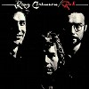
- Red
- Fallen Angel
- One More Red Nightmare
- Providence (神の導き)
- Starless
- Robert Fripp (guitars,mellotron)
- John Wetton (bass,vocals)
- Bill Bruford (drums,percussions)
- David Cross (violin)
- Mel Collins (soprano sax)
- Ian McDonald (alto sax)
- Robin Miller (oboe)
- Marc Charig (cornet)
PONY CANYON: PCCY-667 (1974.11)
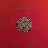
- Elephant Talk
- Frame by Frame
- Matte Kudasai
- Indiscipline
- Thela Hun Ginjeet
- The Sheltering Sky
- Discipline
- Robert Fripp (guitars,devices)
- Adrian Belew (guitars,vocals)
- Tony Levin (stick,bass,vocals)
- Bill Bruford (drums)
#青いジャケットにピンクの音符というジャケット通りのポップなアルバムです。A.Belewの色が前作より濃くなっています。King Crimsonのアルバムということを考えなければ、80年代の3枚の中では一番出来は良いように感じます。最後の曲だけは70年代みたいなインプロビゼーションの曲です、オマケかな。
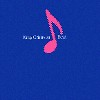
- Neal and Jack and Me
- Heartbeat
- Satori in Tangier
- Waiting Man
- Neurotica
- Two Hands
- The Howler
- Requiem
- Robert Fripp (guitars,organ,frippertronics)
- Adrian Belew (guitars,vocals)
- Tony Levin (stick,bass,backing vocals)
- Bill Bruford (drums)
#えーと80年代King Crimsonの最終作です。内容はほぼ前作、前々作と一緒です、多少インストのナンバーが増えた感じもあります。太陽と戦慄パート3が収録されていますが、前半は緊張感があるのですが後半はなんかダラダラで70年代のような張り詰めた感じはないです。逆にこのアルバムだとBelewのボーカル曲の方が良いような気がする程。
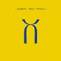
- Three of a Perfect Pair
- Model Man
- Sleepless
- Man with an Open Heart
- Nuages
- Industry
- Dig Me
- No Warning
- Larks' Tongues in Aspic, Part III
- Robert Fripp (guitars)
- Adrian Belew (guitars,vocals)
- Tony Levin (bass,stick)
- Bill Bruford (drums)
#えーとブートレグ、学生時代に八王子の中古屋さんのセールにて確か\1000でした。ブートなのでアヤシイですが1981年、名古屋でのライヴみたいです。
何が聴きたかったかと言うと、80年代メンツでの"Red"と"太陽と戦慄Pt.2"でした。んでも....ちょっと肩透かし...Redはまぁ良いんですけど、Pt.2はなんだかイマイチでした。やっぱこのメンツだと"Thela Hun Ginjeer"とか"Neurotica"とかのハイパーな曲の方がかっちょ良いみたいです、"Discipline"はなんだかアルバムに有った緊張感は感じられず。
しかし"Matte Kudasai"っていつ聴いてもダサい曲だなと。
-
- Discipline
- Thela Hun Ginjeer
- Red
- Matte Kudasai
- The Sheltering Sky
- Frame by Frame
- Neal and Jack and Me
- Neurotica
- Elephant Talk
- Indiscipline
- Sartori in Tangier
- Larks' Tongues in Aspic Part 2
- Adrian Belew (guitars,vocals)
- Robert Fripp (guitars)
- Tony Levin (bass,stick)
- Bill Bruford (drums)
OFF BEAT RECORDS: XXCD-5
#1991年に出るとか言っておきながら、1994年にようやく出た90'sクリムゾンの初のミニアルバム。R.Frippによるとこのアルバムはデモテープのようなものらしいですが、個人的には次作のフルアルバムthrakよりもずっと好きです。荒々しくダイナミックな録音が気持ちいいです。
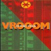
- VROOOM
- Sex Sleep Eat Drink Dream
- Cage
- Thrak
- When I Say Stop, Continue
- One Time
- Robert Fripp (guitars)
- Adrian Belew (gutiars,vocals)
- Tony Levin (bass,stick)
- Trey Gunn (sticks)
- Bill Bruford (percussions)
- Pat Mastelotto (percussions)
PONY CANYON: PCCY-630 (1994.10)
#King Crimsonのフルの新譜をリアルタイムで聴くのはコイツが初でした、ミニアルバムの"VROOOM"は結構気に入ってたので、相当期待して買ったのを覚えています。でも、かなりショボく感じたのも覚えています。"VROOOM VROOOM"とかも期待してた程じゃなかったですし、前のアルバムの"When I Say Stop, Continue"みたいなハイパーインダストリアルみたいな生々しい路線を更に拡張したのを期待してたので、イマイチでした。
でもミックスで妙に整理されちゃっている印象も有って、「ライヴなら...」とか思ってその年の来日を見に行ったんですけど、そのライヴ見て自分の中で一段落しちゃって、後はほとんど追わなくなっちゃいました。
そんなにダメとも思って無いんですけど、自分の中で"宮殿"や"アイランド"みたいな凄みを感じる事は有りませんでした、このアルバムには。ちなみに好きな曲はなんだかファンクな"People"だったり。
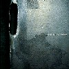
- VROOOM
- Coda: Marine 475
- Dinosaur
- Walking On Air
- B'Boom
- THRAK
- Inner Garden I
- People
- Radio I
- One Time
- Radio II
- Inner Garden
- Sex Sleep Eat Drink Dream
- VROOOM VROOOM
- VROOOM VROOOM: Coda
- Robert Fripp (guitars,soundscapes)
- Trey Gunn (warr guitar)
- Pat Mastelotto (percussions)
- Adrian Belew (guitars)
- Tony Levin (bass)
- Bill Bruford (percussions,marimba)
PONY CANYON/Discipline Global Mobile: PCCY-00700 (1995.3.1)
Disc 1:
- VROOOM
- Frame By Frame
- Sex, Sleep, Eat, Drink, Dream
- Red
- One Time
- B'Boom
- THRAK
- Improv - Two Sticks
- Elephant Talk
- Indiscipline
Disc 2:
- VROOOM VROOOM
- Matte Kudasai
- The Talking Drum
- Larks' Tongues In Aspic Part II
- Heartbeat
- Sleepless
- People
- B'Boom (reprise)
- THRAK
- Robert Fripp (guitars,soundscape,mellotron)
- Adrian Belew (guitars,vocals)
- Trey Gunn (stick,backing vocals)
- Tony Levin (bass,backing vocals)
- Pat Mastelotto (percussions)
- Bill Bruford (percussions)
PONY CANYON: PCCY-00795 (1995.7.21)
#ゼンブthrakのインプロです。
- THRAK
- Fearless and Highly THRaKked
- Mother Hold THe Candle Steady While I Shave The Chicken's Lip
- THRaKaTTaK Part I
- The Slaughter Of The Innocents
- This Night Wounds Time
- THRaKaTTaK Part II
- THRAK reprise
- Robert Fripp (guitars,soundscapes)
- Trey Gunn (warr guitar)
- Pat Mastelotto (percussions)
- Adrian Belew (guitars)
- Tony Levin (bass)
- Bill Bruford (percussions,marimba)
#B.BrufordとT.Levin抜きのクリムゾン新譜です。噂通り"太陽と戦慄part4"なんて収録されてます、結局私はProjecKtシリーズはほとんど聴いてない(SPACE GROOVEだけ聴いてつまらなくて買わなくなっちゃった)ので、気分的には"thrak"以来になります。
笑っちゃうくらい"クリムゾン"な記号が繰り返し繰り返し使われてきます、こんなに露骨なのも初めてと思います。どうも遂に開き直ったみたいですね、もう新しい事なんて出来ないって。リズムセクションの面白く無いのもプラスされて、Sunday All Over The World(昔R.Frippが奥さんとやったバンド、これもクリムゾンっぽいフレーズが沢山)にも聞こえました。
太陽と戦慄part4やFraKcturedの80年代の高速アルペジオと70年代のあの弾きまくりのR.Frippを足したような曲に惹かれるモノがあるのも確か。これはプログレ/クリムゾンファン以外の人に受けるのかな？とか思うとちょっと厳しいかな。
何が無いのかっていうと、どうしても気合が感じられない。前作thrakもそうだけど良く出来たアルバムと思いますけど、やっぱり何かが足りない。"island"→"larks' tongues in aspic"の時くらいの「同じバンド？」みたいな変化が無いと本当にどーにもならないのかも。
まぁそれでもこのアルバム何度も聴いてる私はクリムゾンファンなんだろーけど。(2000.5.4)
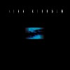
- ProzaKc Blues
- The ConstruKction of Light
-
- Into the Frying Pan
- FraKctured
- The World's My Oyster Soup Kitchen Floor Wax Museum
- Larks' Tongues in Aspic Part IV
-
-
- Coda: I Have a Dream
ProjeKct X
- Heaven And Earth
- Adrian Belew (guitars,vocals)
- Robert Fripp (guitars)
- Trey Gunn (bass touch guitar,baritone guitar)
- Pat Mastelotto (drumming)
PONY CANYON/Discipline Global Mobile: PCCY-01455 (2000.5.3)
#1969時期のライヴ音源のオフィシャルリリース。2枚組みで足して120分以上、おなかいっぱいゴチソウサマ。
や、でもなんか懐かしいです。自分の中に流れるプログレッシャーの血を再認識。(1999.6.15)
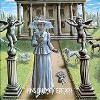
BBC Radio Sessions
- 21st Century Schizoid Man
- In The Court of the Crimson King
- Get Thy Bearings
- Epitaph
Filmore East, New York, 21 November 1969
- A Man, Acity
- Epitaph
- 21st Century Schizoid Man
Filmore West, San Francisco, 14 December 1969
- Mantra
- Travel Weary Capricorn
- Improv - Travel Bleary Capricorn
- Mars
Filmore West, San Francisco, 16 Decmber 1969
- In The Court of the Crimson King
- Drop In
- A Man, A City
- Epitaph
- 21st Century Schizoid Man
- mars
PONY CANYON: PCCY-01087-1/2 (1997)
#キングクリムゾンのライヴの中で格別的な評価を受けている、いわゆる「1973年アムステルダム」です。オフィシャルからのリリース。
もー最近はコレクターズシリーズとかで、食べ過ぎな位ライヴアルバムがリリースされていますけど、とりあえずコレと詐欺師箱を聴けと。
まぁその「Starless and Bible Black」の元ネタの音源なんですけど、これの「Fracture (突破口)」はかっちょ良すぎます。別に昔を懐かしむロックオヤジではないけど（というか当時まだ生まれてないし）今のと較べてもしょーがないんですけどね。かっちょいい。
しかしなんで「The Night Watch」の邦題が「夜を支配する者」なんだろう？レンブラントの「夜警」でしょ？
Disc-1:
- Easy Money
- Lament
- Book of Saturday
- Fracture
- The Night Watch
- Improv: Starless and Bible Black
Disc-2:
- Improv: Trio
- Exiles
- Improv: The Fright Watch
- The Talking Drum
- Larks' Tongues in Aspic (Part II)
- 21st Century Schizoid Man
Live aat the Amsterdam Concertgebouw November 23rd 1973
- Robert Fripp (guitars,mellotron)
- David Cross (violin,viola,mellotron)
- John Wetton (bass,vocals)
- Bill Bruford (drums)
PONY CANYON: PCCY-01177-1/2 (1997)
#"ISLANDS"のライヴがどーしても聴きたくって買いました、いわゆるブートレグってヤツです。
確か昔新宿のDISC UNIONで買ったんだと思いますけど、ライナー(っていうか表に入ってる紙切れ)のタイトルとケースのタイトルが違う(ケースはLOST ISLANDで紙切れはLIZARD IN ISLAND'S SUN)で相当アヤシイCDです、ケースには"Live at Bringhton, Dome 16/10/1971"って書いてありますけど、これも本当かわからないです。音質も余り良く無いです(ブート余り買わないからどの程度なのかわかりませんけど)
それでも、"ISLANDS"のアルバムの曲をやってるライヴ盤なんて滅多に見ないので、Mel Collinsのフルートとかこの時期の曲はとてもとても好きなもので。K.Tippettのピアノの代わりにR.Frippがギターを弾き語る8曲目が聴けただけで、個人的には満足。でも"ISLANDS"のアルバムに思い入れ無い方にはオススメできないです。
- Circus
- Picture of City
- Ladies of The Road
- The Letters
- Formentera Lady
- Sailor's Tale
- 21st Century Schizoid Man
- Islands
- Groon
- Robert Fripp (guitars,mellotron)
- Mel Collins (sax,flute,mellotron)
- Boz Burrel (bass,vocals)
- Ian Wallace (drums)
MICROPHONE RECORDS: MPH-CD-07
Volume One: SPACE GROOVE
- Space Groove II
- Space Groove III
- Space Groove I
Volume Two: VECTOR PATROL
- Happy Hour On Planet Zarg
- Is There Life On Zarg?
- Low Life In Sector Q-3
- Sector Shift
- Laura In Space
- Sector Drift
- Sector Patrol
- In Space There Is No North, In Space There Is No South, In Space There Is No East, In Space There Is No West
- Vector Patrol
- Deserts Of Arcadia (North)
- Deserts Of Arcadia (South)
- Snake Drummers Of Sector Q-3
- Espace From Sagittarius A
- Return To Station B
- Adrian Belew (V-drums)
- Robert Fripp (guitars)
- Trey Gunn (touch guitar,guitar synth)
PONY CANYON/Discipline Global Mobile: PCCY-01225 (1998.3.18)
#R.Frippの初ソロ、なんか1曲1曲ではカッコ良い曲が多いのですが、アルバム全体だと散漫な印象を受けます。Frippのソロというか逆にFrippが参加した曲を集めたコンピみたいな感じに聞こえてしまいました。でもP.Gabrielの"Here Comes The Flood"は綺麗な曲です。
- Preface
- You Burn Me Up I'm A Cigarette
- Breathless
- Disengage
- North Star
- Chicago
- NY 3
- Mary
- Exposure
- Haaden Two
- Urban Landscape
- I may not have had enough of me but I've had enough of you
- First Inaugural Address to I.A.C.E. Sherborne House
- Water Music 1
- Here Comes The Flood
- Water Music 2
- Postscript
- Robert Fripp (guitars,devices)
- Barry Andrews (keyboards,organ)
- Phil Collins (drums,percussions)
- Brian Eno (synthesizers)
- Tony Levin (bass)
- Jerry Marotta (drums,percussions)
- Narada Michael Walden (drums)
- Sid McGinnis
- Shivapuri Baba
- J.G.Bennett
- Darryl Hall (vocals on 2.5.)
- Peter Hammill (vocals on 4.6.12.)
- Terre Roche (vocals on 8.9.12.)
- Peter Gabriel (vocals on 15.)
#えっと、これは"Under Heavy Manners/God Save the Queen"(1980)と"The League of Gentlemen"(1981)を合体させて、ちょっと手を加えたアルバムです。最初の2曲が"God Save Queen"からの曲で、残りが"The League of Gentlemen"からの曲になってます。アホみたいに単調なリズムにR.Frippがギターを弾きまくるような曲が多いかな、力抜けてて結構聴いてるほうは楽しめるかも。"The League of Gentlemen"の方は元XTCのB.Andrews参加してて更にポップです。オルガンの入り方とか初期P-MODELみたい、どっちが先だろう。ちなみにこれが発展して、80年代King Crimsonになるみたいです。
- God Save The King
- Under Heavy Manners
- Heptaparaparshinokh
- Inductive Resonance
- Cognitive Dissonance
- Dislocated
- H.G.Wells
- Eye Needles
- Trap
- Robert Fripp (guitars)
- Busta Jones (bass on 1.2.)
- Paul Duskin (drums on 1.2.)
- Barry Andrews (organ on 3-9.)
- Sara Lee (bass on 3-9.)
- Johnny Toobad (drums on 3-9.)
VIRGIN JAPAN: VJD-5002 (original released on 1985)
#これ、リアルタイムで買ってます。当時は相当なプログレッシャーだったみたいです、私。
今、久々に聴きなおしているんですけど、嫌いじゃないですこのアルバム。frippertronicsの発展形でsoundscapeって名前が付いてるらしいんですけど、やってる事はそんなに変わらなかったりします。静的な広がりのある音、これがギター1本でやってるってのがちょっと信じられないくらい綺麗に響く空間を作ってます。
淡々とアルバム1枚ずーっと音響なので、そんなに面白いモノでも無いんですけど、以外と聴けます。最近の音響系の人達より、Klaus Schulzeにマインドは近いんじゃないかなと思いました。音遊び的な感覚じゃなくって、なにか意思みたいなモノが感じられるという事で。好んで聴く人も少ないでしょうけど。
- 1999
- 2000
- 2001
- Interlude
- 2002
PONY CANYON/Discipline Global Mobile: PCCY-00687 (1995.1.20)
#P.Sinfieldの1973年のソロアルバム"Still"に何曲か追加してVoice Printから1993年に再発されたCDです。初期K.Crimson系の豪華な面子がゲスト参加してます。夢見がちなポエジー(ハズカシー)な内容です。
実はK.Crimsonの4枚目みたいな内容を想像して買ったんですけど、ちょっと違ってました。どっちかというとMcDonnald & Gilesかな。
- Can You Forgive A Fool
- The Night People
- Will It Be You
- Hanging Fire
- A House of Hopes and Dreams
- Wholefood Boogie
- The Piper
- Under The Sky
- Envelopes of Yesterday
- The Song of The Sea Goat
- Still
- Peter Sinfield (acoustic guitars,synthesizers,vocals)
- Richard Brunton (guitars)
- Brian Cole (pedal steel gutiar)
- Greg Lake (guitars,backing vocals)
- Snuffy (guitars on 6.9.)
- Keith Christmas (guitars on 4.)
- Mel Collins (saxes,flute,celeste)
- Don Honeywill (baritone sax on 2.)
- Chris Pyne (trombone)
- Greg Browen (trumpet)
- Stan Roderick (trumpet)
- Robin Miller (coranglais)
- Tim Hinckley (electric piano on 2.)
- Phil Jump (piano,organs,keyboards)
- Keith Tippet (piano on 10.)
- Boz Burrell (bass on 2.)
- Steve Dolan (bass)
- John Wetton (bass on 9.10.)
- Ian Wallace (drums on 2.10.)
Voiceprint: VP152CD (1993, original release 1973, Manticore)